Final Project: Crane Wish Machine
For my final project, I decided to deviate from my orginal idea of putting kinematic machines on a dress. Inspired by the Japanese myth of senbazuru, where folding 1000 paper cranes could grant a wish, I wanted to make a machine that explored a connection between cranes and wishes. I decided to attempt to make series of cranes that would respond to a "wish capsule" being placed into the crane that would trigger that crane and the cranes next to it to begin flapping in a ripple effect. I also wanted to make the cranes modular so that any bird could be connected to any other bird and different patterns could be made.
To even attempt to achieve these goals, I first had to figure out my circuit and how the birds were going to communicate with each other. Since I wanted to keep the electronics small and hidden, I continued to use the ATTiny1624 that I had used for the MVP. The birds wouldn't need to communicate anything more than the fact that they had started flapping, and hence I decided that simply connecting two pins between each pair of birds would be sufficient - one pin for sending the signal (writing HIGH) and one pin for reading the signal from the other bird. This would use 8/12 pins of the ATTiny, leaving just 4 pins for other features (though really 3 since the UPDI pin had to be used for programming) but it worth it. One problem I ran into circuit-wise was that if left floating, the input pins would read random signals instead of staying at LOW. Hence, I needed to add a pull down resistor for each of the input pins in order to ensure that the pins would only read high if another bird had sent a signal. I also implemented a hall effect sensor as the activation mechanism of my circuit instead of a button, since when I ultimately use this circuit with the crane I wanted the activation to seem kind of magical and not need any mechanical weight based triggers. Here's a picture of two connected completed circuits:
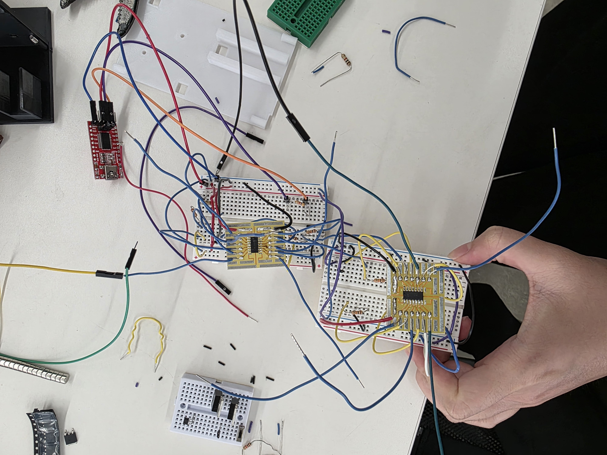
I also had to write some fairly sophisticated code to handle all of the different possible interactions that could go on in my circuit. There were a lot of timing elements to keep track of - I wanted the birds to have a slight delay before they began flapping in order to create more of a ripple effect, to only flap for a certain amount of time, to be able to dynamically update their flap time based on signals from their neighbors if they received multiple signals, and to ignore signals from their neighbors if they had already been activated and were currently flapping. Keeping track of all of these different conditions just by using millis() and without any delays was definitely an interesting logical challenge. For instance, here's a snippet of the code that deals with what should happen while the bird is delaying:
// PROCESS DELAY
if (isDelaying) {
// Check if we should stop delaying
if ((unsigned long) (millis() - beginDelayTime) > delayTime) {
// Start flapping - set isDelaying to false and isFlapping to true
isDelaying = false;
isFlapping = true;
// Set beginFlapTime
beginFlapTime = millis();
// begin sending signal to other birds by setting BeginSignal Time, setting isSignaling to true
beginSignalTime = millis();
isSignaling = true;
// setting each output pin to high
for (int i = 0; i < numDirections; i++) {
digitalWrite(outputPins[i], HIGH);
// also begin ignoring the bird in this direction
beginIgnoreTime[i] = millis();
isIgnoring[i] = true;
}
}
else {
// Keep delaying
analogWrite(motorPin, 0);
}
}
Here's a video of the two leds running the above code - you can see how I can trigger the led lights from either side, and all the delays and propagation works perfectly!
This was largely the final circuit that I ended up with, though later I would discover that when changing the led out for a n-channel mosfet and motor, I needed to add a separate 5V power source and a diode in order to reduce the back EMF of the motor (which was browning out my microcontroller and causing all sorts of weird sensor behavior).
After designing the circuit and writing the code, I then had to create the actual crane that was going to flap atop all of this. Since I was inspired by a Japanese myth involving paper cranes, I thought it was only appropriate that my crane looked like a paper crane in some form. Hence, I modeled a paper-crane like shape in Fusion, based vaguely off of work online like this hanging paper crane model. There are a few differences between a real paper crane and my version though. For one, my cranes had a much larger and taller body in order to have space to fit the "wish capsule" in. There was also a divot in the middle of this hole for the hall effect sensor to sit, along with space for the wires to be threaded down into the bottom of the crane. There was a small hole in the bottom of the body of the crane, both for the crane to be able to be mounted on top of the mechanism I had designed and for the wires of the hall effect sensor to travel down the connecting hollow aluminum tube and connect to the rest of my circuit. This setup allowed the wiring inside the crane to be hidden cleanly. Here are a few pictures of the crane - both in Fusion, and all printed out.
Download Crane Model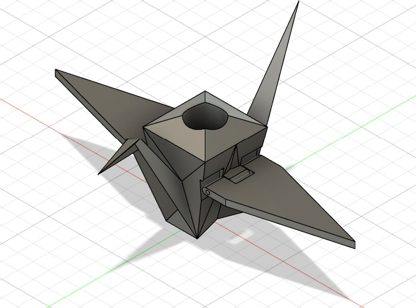
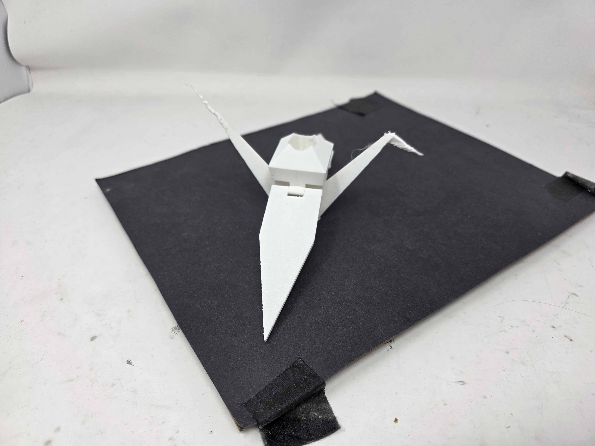
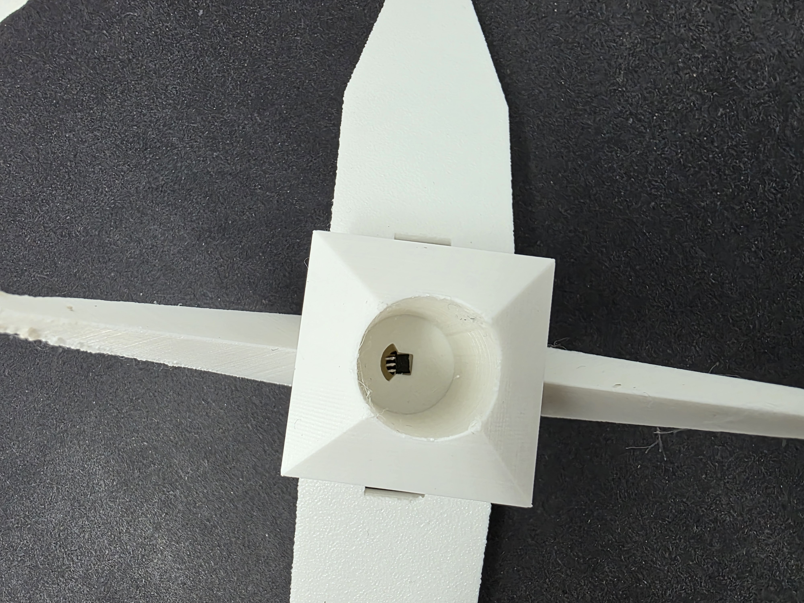
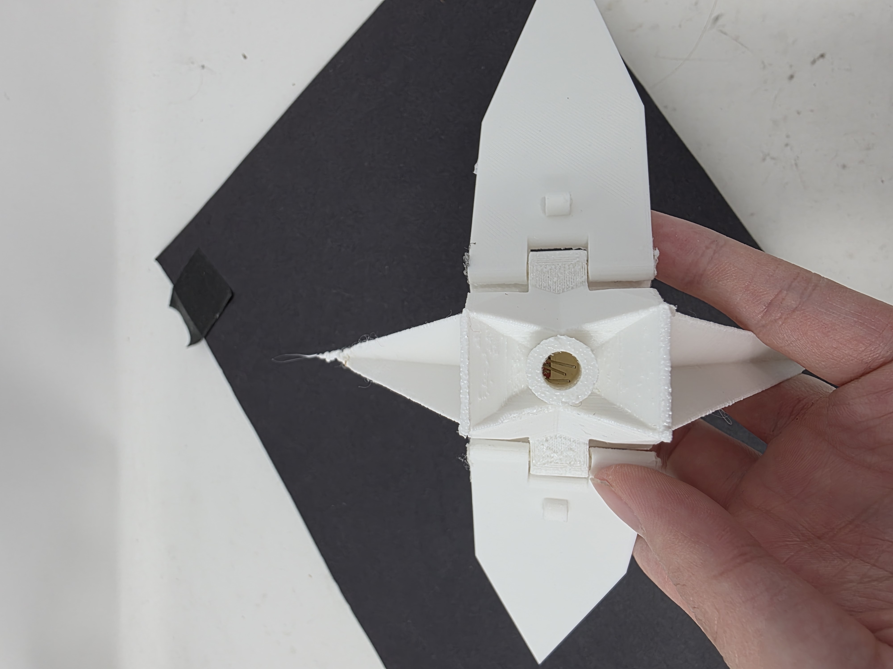
Additionally, I had to make it so that the wings of the crane could travel freely and flap. To do so, I extended the wire-hinge idea that I used for the bird in the MVP. The problem with the wire hinge was that I had to secure it with hot glue, which led to an unsightly mess on either side of the wing. Hence, I decided to take a page out of the 3d printing community's book and make a filament hinge instead. The basic principle of the filament hinge is very similar to that of the wire hinge - you take a piece of filament and thread it through holes in the body and wing of the crane to create a hinge. However, instead of securing the filament with glue, you melt the filament on either side (I did so with a soldering iron) in order to create a blob that is larger than the hole and can hence secure the filament in place without needing glue. This also creates a much cleaner look and allows the wings to flap freely without any mess getting in the way.
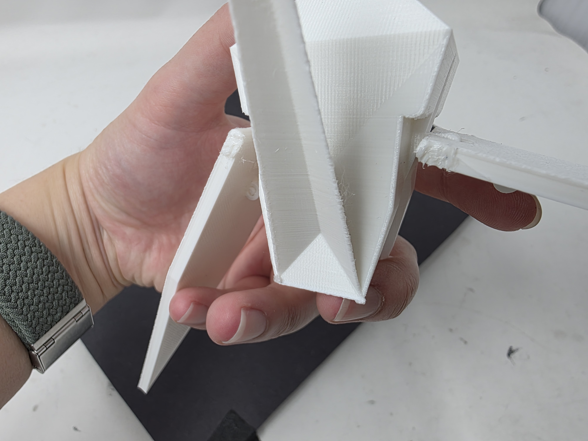
I also slightly redesigned the box for the mechanism that I had from my MVP. The press-fit connections that I had originally designed for the box did not work well with the 3d printed parts, and hence I changed to screw attachments instead. I also moved the motor gear a bit to the side to make the whole structure a bit less tall and unwieldy, and generally reduced the amount of dead space used in some parts of the box. I also added an area under the bottom plate where a pcb could sit. Here's the model of the redesigned box:
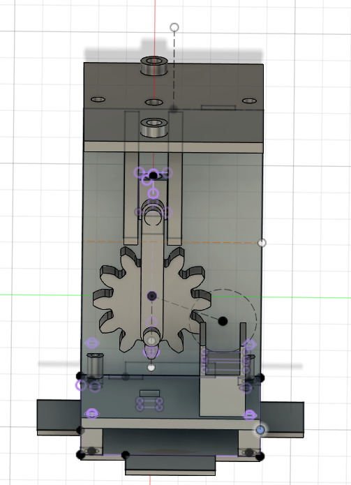
Download Redesigned Box ModelDownload Motor Loading Gear ModelLastly, I also had to design the "wish capsule" that would trigger the flapping of the birds. This was a small cylinder with a magnet on the bottom that would fit into the hole in the body of the crane and trigger the hall effect sensor when placed in the hole. I also wanted the capsule to be functional and be able to really store a piece of paper without randomly falling out, so I designed a bayonet coupling to close the capsule following tutorials like this and this . Here's a picture of the bottom of the wish capsule and the bayonet coupling in action:
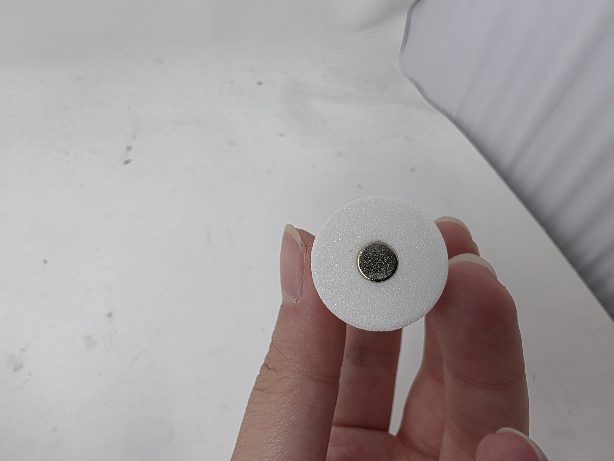
Download Wish Capsule ModelLastly, I attempted to custom mill a double-sided pcb for my circuit using the monoFab in the lab in order to consildate my wires and hopefully make the sharing of powers and grounds between birds a bit more efficient. This was a journey fraught with all kinds of problems, and ultimately it did not work. However, I still learned a lot, so I'm going to document it here. I started by creating a schematic in KiCad of my MVP circuit. As a started making my pcb, I quickly realized that it was topologically impossible to fit all of the necessary connections on one side of the board, which meant that I needed to make a double sided pcb and use vias to connect the two sides. After I designed my pcb, I manipulated the positions of the components so that it would fit perfectly in the bottom of the box I had designed for the mechanism. The schematic and pcb are pictured below:
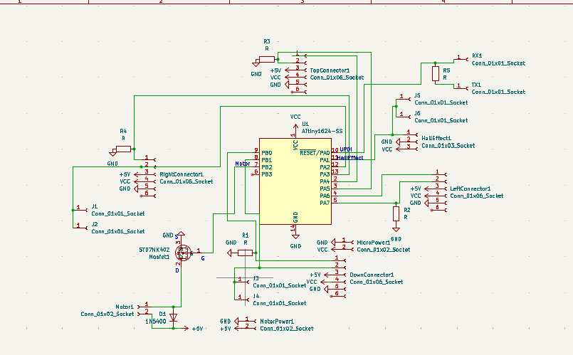
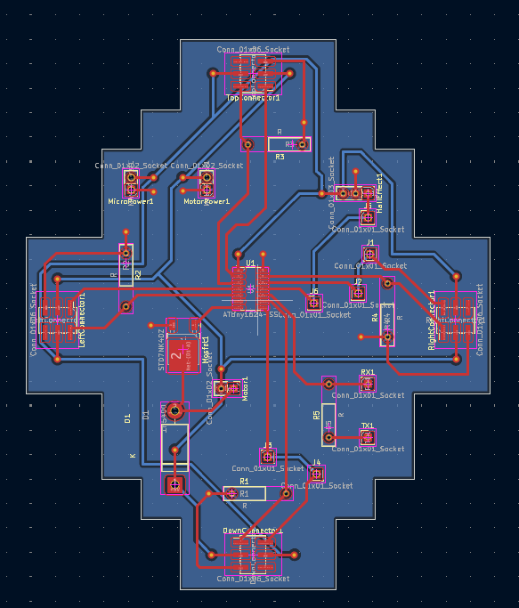
Download KiCad Project ZipI then attempted to mill the pcb on the monoFab. As a first attempt, I used Bobby's PCB flipping software (linked here) to try and flip the pcb and line up the vias. However, since my pcb was too big and close to the size of the stock, the flipping wasn't stable and my first pcb failed. You can see in the image that none of the traces are aligned with the holes
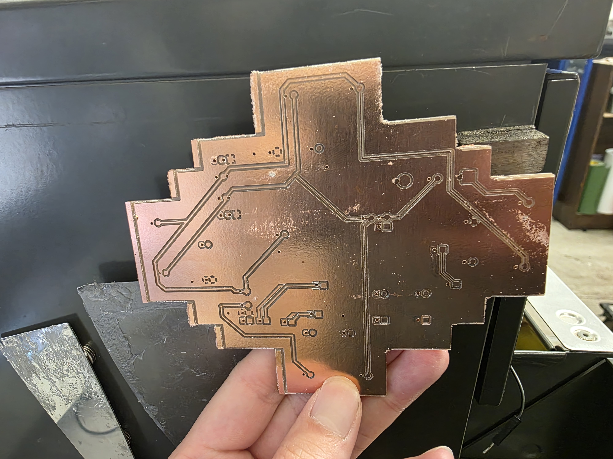
For my second attempt, Bobby helped me custom design at cut pattern with tabs and tape up a jig that would make the pcb flipping much more stable. This worked much better and I was able to mill some great pcbs!
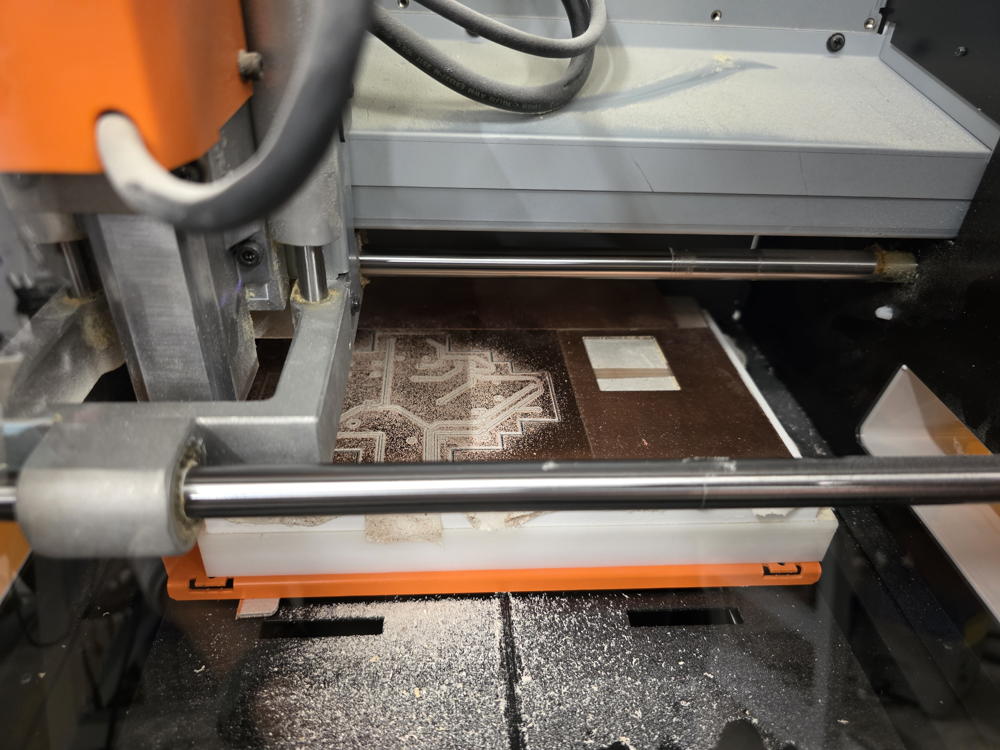
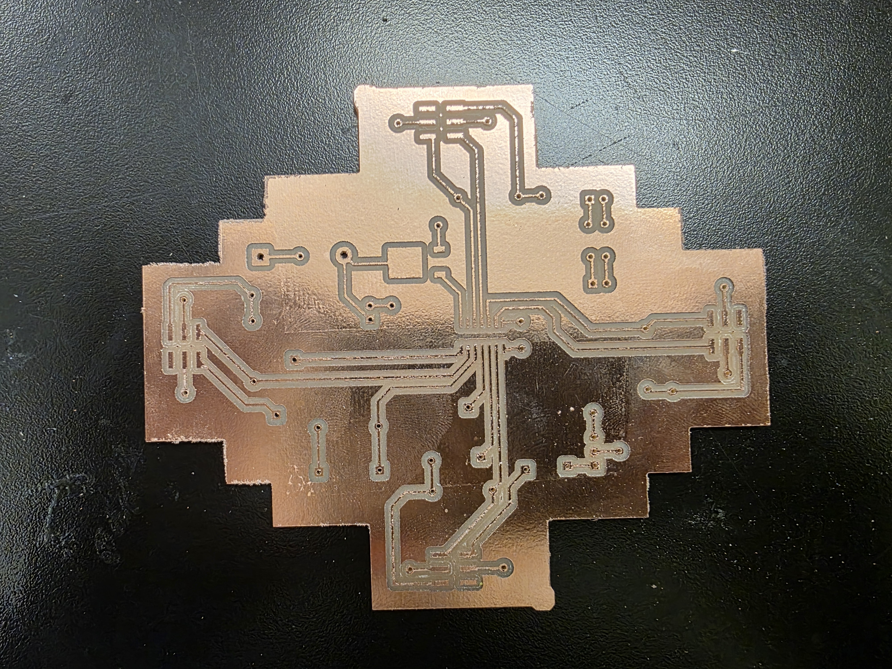
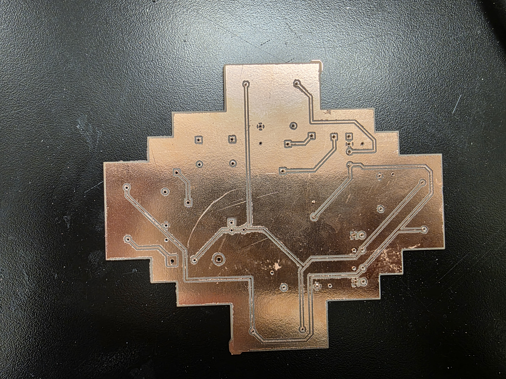
I was then able to painstakingly solder components and vias onto the pcb, and fit it into the bottom of the bird, where the motor and the hall effect sensor wires were also soldered to it. However, when I plugged everything in I discovered that I had routed some traces wrong and so the pcb did not work :(. Still, I decided to keep the pcb in the bird just to show what could have been. Overall, I learned a lot from the process of designing and milling the pcb, even though it didn't work in the end.
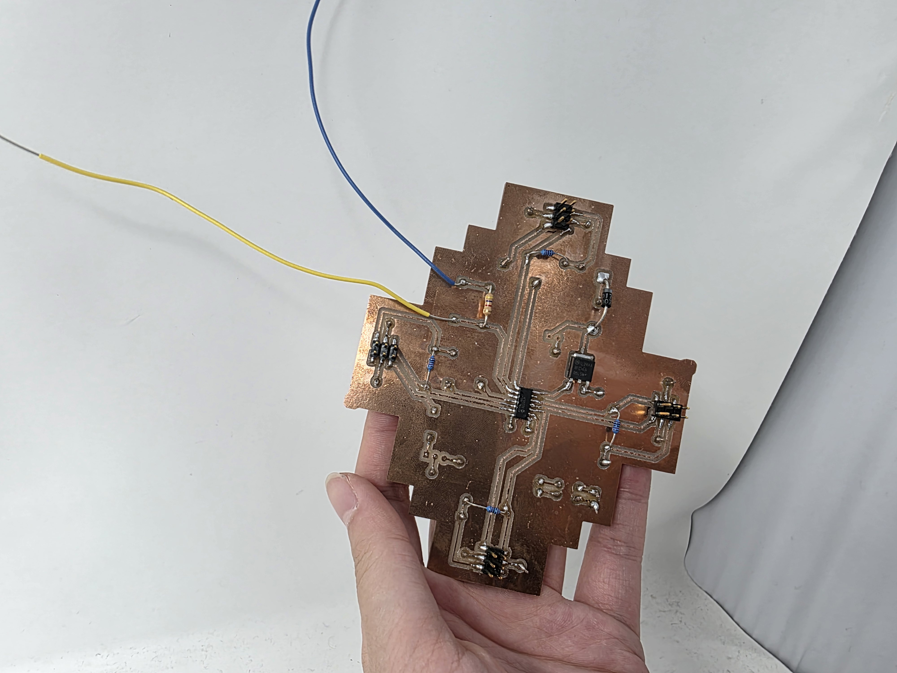
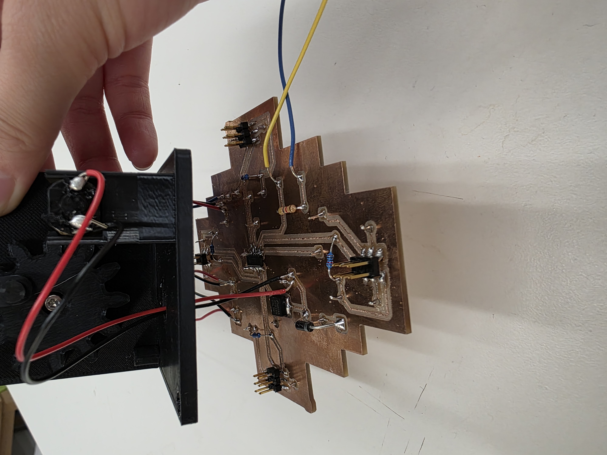
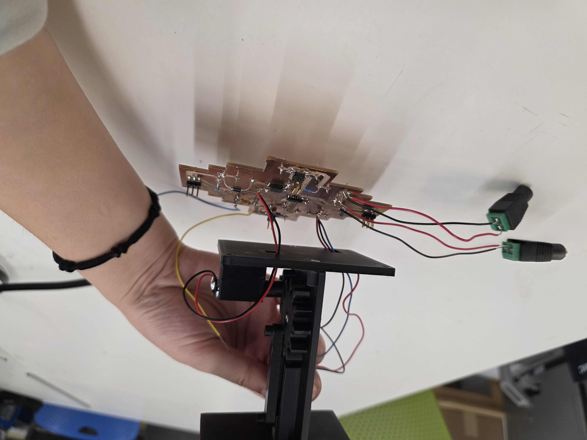
For my final presentation, I instead set up the bird with the old circuit I had designed before the pcbs. You can still see that the bird flaps in response to a message capsule, and that the signal propogates to the neighboring led (representing another "bird") successfully. Overall, I'm still happy with the progress I was able to make and learned a ton!.

Special Thanks
So many people helped me get even close to where I am now, so I wanted to take the time to thank them here. Thanks to Bobby and all of the other TAs for answering all of my questions about everything, Aurora for helping me cut my aluminum tubesm, keeping me company in the shop and making sure I was fed, and to everyone in the class who encouraged me. Thanks for a great semester of PS70!